2015 — Now
Architectural Designer, Heerim Architects
대형 재건축 설계경쟁 다수 당선 (반포미도, 압구정3구역, 은마). UN Studio · Perkins Eastman · Morphosis 협업. 마스터플랜·인허가·실시설계 전 과정. CG 퀄리티 컨트롤 및 홍보관 운영.
대형 재건축 설계경쟁 다수 당선 (반포미도, 압구정3구역, 은마). UN Studio · Perkins Eastman · Morphosis 협업. 마스터플랜·인허가·실시설계 전 과정. CG 퀄리티 컨트롤 및 홍보관 운영.
Hanyang Univ. Graduate School · GPA 4.2 / 4.5 (2025.02 졸업)
디자인 담당 · 5,158세대 / 양천구 신통기획 최대 단지
Design Director · 1,750세대
RFP 제작 및 공모 관리 · 2.3M m²
UN Studio 협업 · 4,300세대
삼성물산 + Perkins Eastman 협업
Urban density and depression during COVID-19 in Seoul.
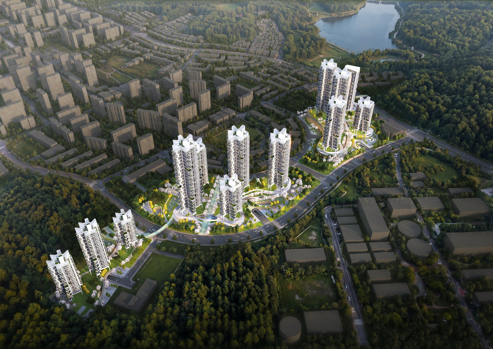
00 · AI 01 · Mido
01 · Mido 02 · M-14
02 · M-14 03 · M-10
03 · M-10 04 · M-5
04 · M-5 05 · Apg.
05 · Apg. 06 · Midan
06 · Midan0407.jpg) 07 · B3
07 · B3 08 · Pyt.
08 · Pyt. 09 · Sd.
09 · Sd. 10 · Eun.
10 · Eun..jpg)
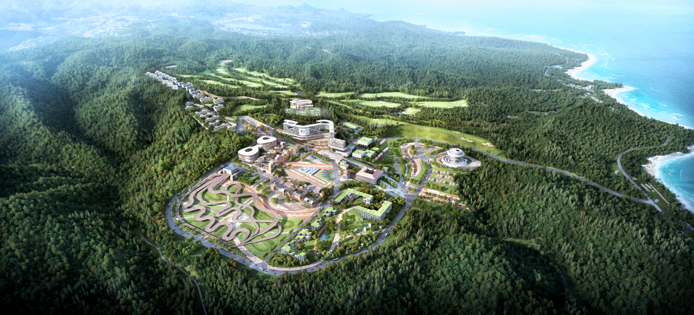
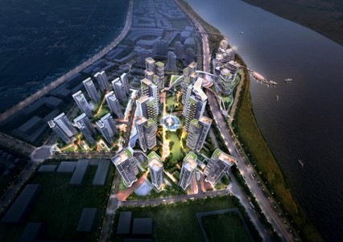
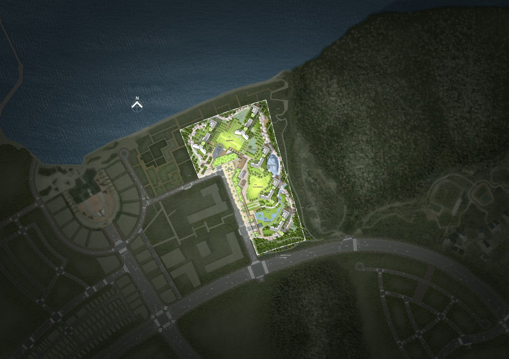
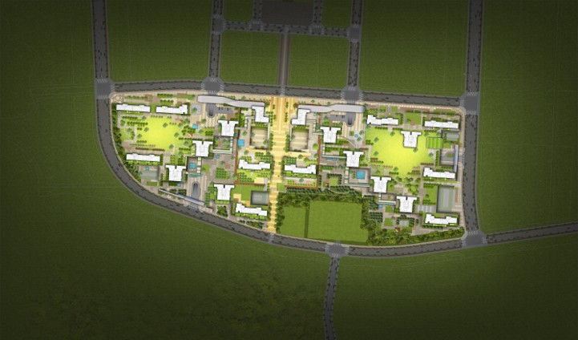


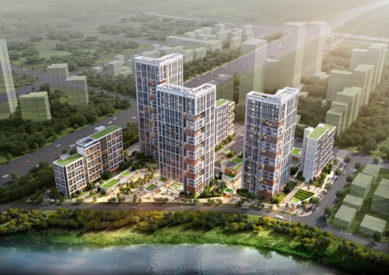


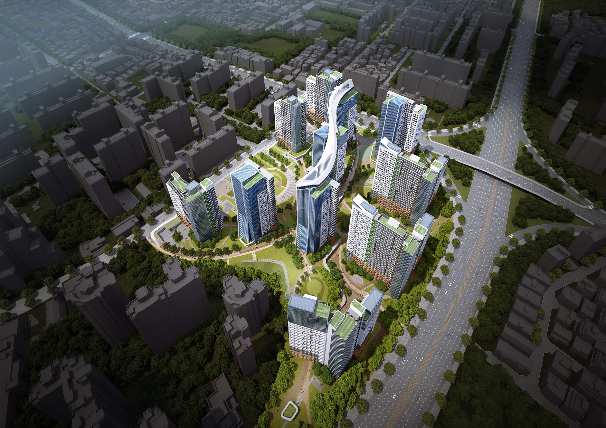


.jpg)


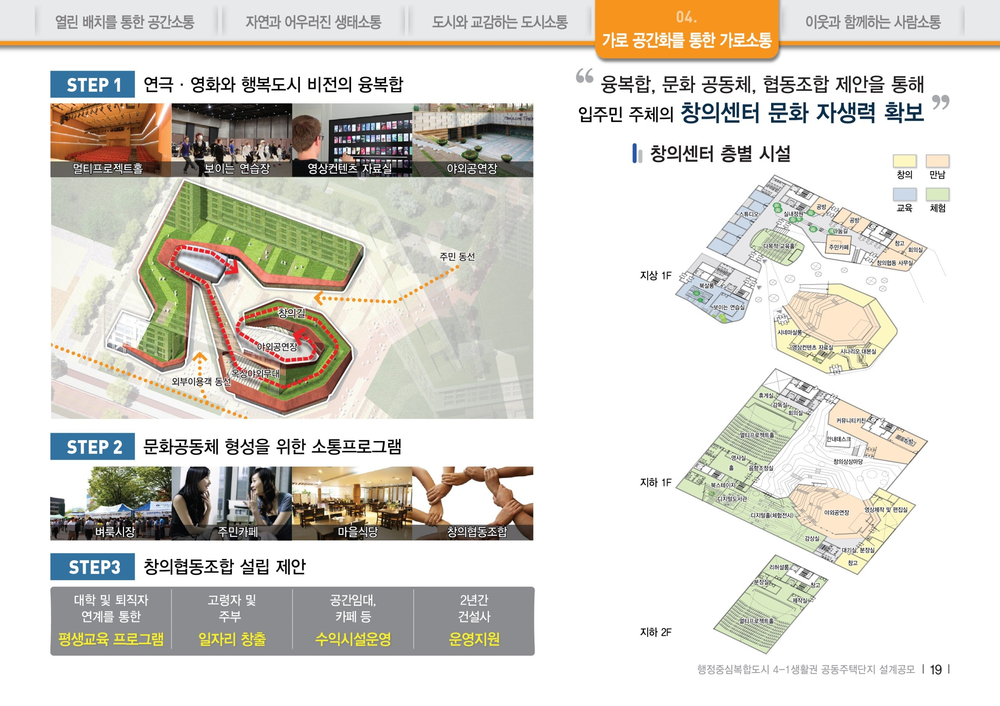
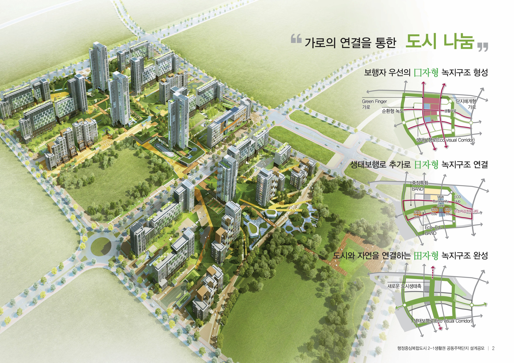
AI는 설계를 대체하는 도구가 아니라, 초기설계 단계의 반복 검토와 시각화 속도를 끌어올리는 도구라는 가설로 시작한 사내 R&D 프로젝트입니다.
사용자가 정한 부지 조건·법규·프로젝트 목표 안에서 AI가 다수 대안을 탐색·생성·랭킹하면, 사람이 판단하고 다음 작업 단계로 연결합니다. 판단은 사람, 실행은 AI라는 역할 분담을 전제로, 한 번에 정답을 만드는 것이 아닌 여러 안을 빠르게 검토할 수 있게 만드는 것이 핵심입니다.
2026.04 본부장·임원진 대상 사례발표(22슬라이드)를 통해 두 트랙(Claude+MCP 매스/CAD 자동화 · Freepik 시각화 가속)을 공유했고, 동기간 자체 개발한 규모검토 자동화 툴(apt · complex · hotel)이 사내 표준으로 도입되었습니다.
두 트랙으로 운영합니다. Track A — Claude + MCP는 부지조건·법규·목표 3축 입력을 받아 배치대안을 탐색·랭킹하고, 선택안을 그대로 Rhino 매스로 연결합니다. 이미지에서 끝나지 않고 다음 작업 단계로 이어진다는 점이 핵심입니다. Track B — Freepik은 매스 한 장을 회전 조감·눈높이 투시·짧은 영상으로 빠르게 변환합니다. 검토와 전달이 분리된 업무가 아닌 하나의 흐름으로 이어지며, 다음 단계는 도면·BIM 영역 확장입니다.
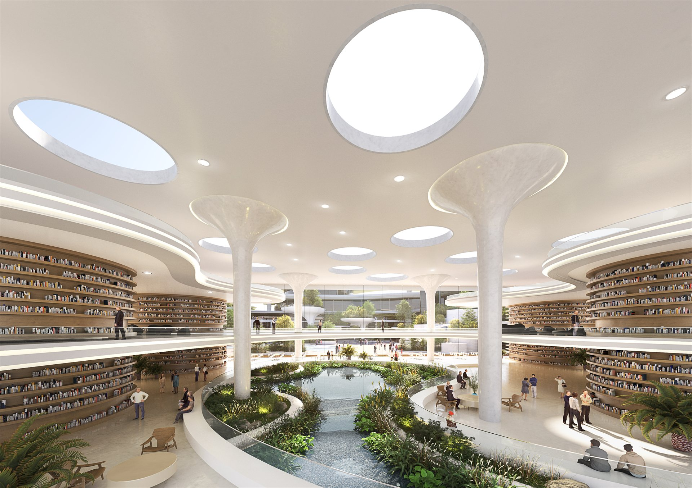
01 — Track A · Mass Model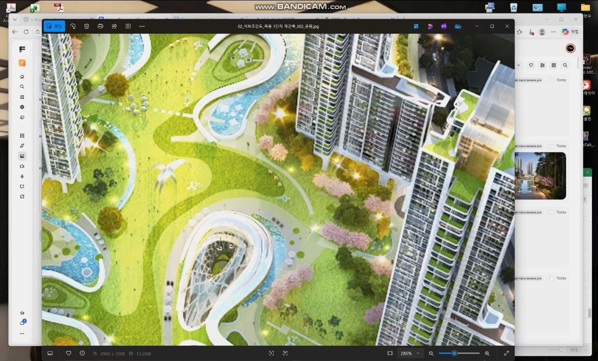
02 — Track B · Perspective
Project 01 / 10
반포 프리미엄 입지의 1,750세대 대규모 재건축 설계공모 프로젝트입니다.
프로젝트 초기부터 PM과 함께 배치대안을 작성하고, 제안한 배치안과 주동평면으로 계획을 진행했습니다. 스카이커뮤니티를 직접 설계하여 최종 컨펌을 받았으며, DA+해안건축과의 경쟁에서 상대안 분석 및 홍보관 운영에 참여하여 희림안 최종 당선에 기여했습니다.
가장 큰 의사결정은 배치 방향이었습니다. 한강 조망권 극대화와 일조권 확보라는 상충 조건 속에서 8개 배치대안을 직접 작성하고, 매주 회장님 보고를 통해 최적안을 도출했습니다. 스카이커뮤니티는 한강 조망을 입주민 일상으로 끌어오겠다는 컨셉으로, 옥상층에 루프탑 라운지·피트니스·스카이가든을 배치하여 경쟁사 대비 명확한 차별점을 만들었습니다.
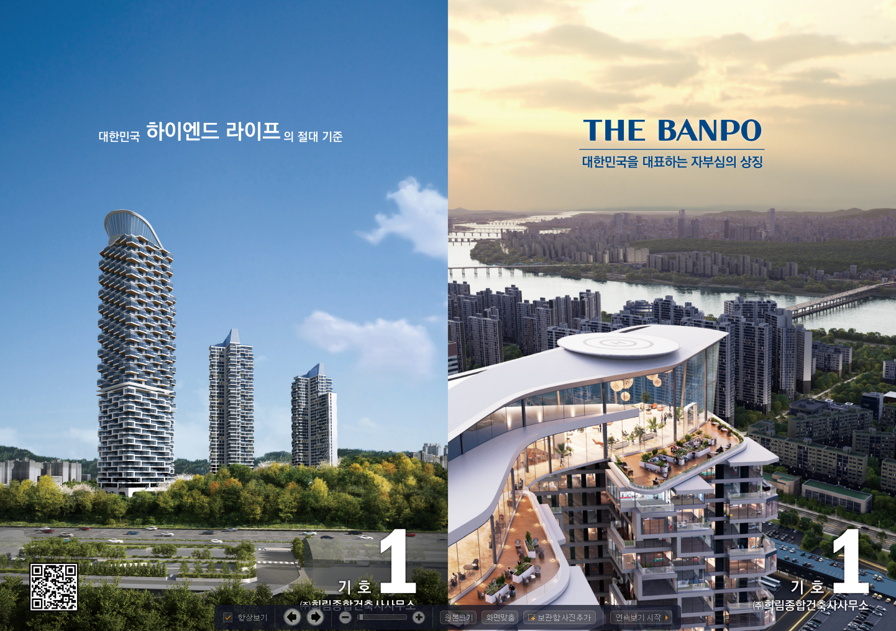
01 — Perspective 02 — Site Plan
02 — Site Plan
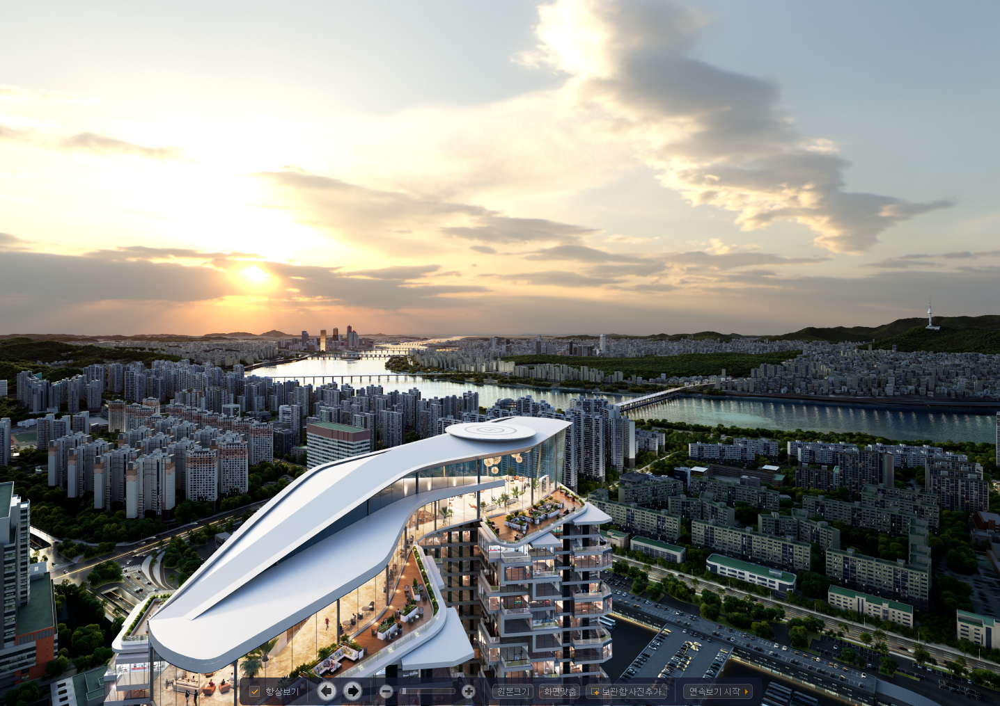
03 — Sky Community
Project 02 / 10
양천구 신통기획 단지 가운데 가장 큰 5,158세대 4획지 규모의 재건축 정비계획 변경안입니다.
지상 49층까지 끌어올린 입체적인 스카이라인과 4개 획지의 유기적 연결을 디자인 축으로 잡았습니다. 2025년 12월 설계자 선정 입찰에서 당선되어, 양천구 최대 규모 단지의 디자인 방향을 이끌게 되었습니다.
양천구 신통기획 단지 중 가장 큰 4획지 5,158세대를 하나의 단지처럼 묶기 위한 디자인 전략이 핵심이었습니다. 각 획지의 49층 타워를 시각적 축으로 연결하고, 저층부 커뮤니티 동선을 통합 설계하여 분리된 4개 획지가 단일 단지로 인지되도록 방향을 잡았습니다.
01 — Bird's Eye View
 02 — Main Perspective
Project 03 / 10
02 — Main Perspective
Project 03 / 10
양천구 신정동 4,081세대 2획지 재건축 정비계획 변경안입니다. 설계자 선정 입찰에서 CG·제안서 작성을 총괄하고, 제출 이후 추가 자료·후속 대응까지 일관되게 맡은 프로젝트입니다.
지상 37층으로 양천구 일대 스카이라인의 새로운 기준점을 제안했고, 단일 이미지로 단지의 일조·조망·녹지 컨셉을 압축하여 전달하는 CG 전략을 직접 디렉팅했습니다.
이 프로젝트에서 가장 큰 역할은 디자인 한 가지에 그치지 않고 CG 품질·제안서 일관성·제출 후 대응까지 전 사이클을 책임지는 것이었습니다. CG는 단지의 일조·조망·녹지 컨셉을 한 컷에 담아내는 단일 이미지를 직접 디렉팅하여 만들었고, 제안서는 4,081세대라는 큰 규모를 비전문가 조합원이 시각적으로 이해할 수 있는 구조로 다듬었습니다. 제출 이후 후속 대응까지 동일한 디자인 언어가 유지되도록 PM 역할도 겸했습니다.
01 — Bird's Eye View
 02 — Main Perspective
Project 04 / 10
02 — Main Perspective
Project 04 / 10
양천구 목동동로 3,998세대 2획지 재건축 정비계획 변경안입니다. 랜드마크 주동 디자인을 책임지고, 저층부 근린생활시설 디자인까지 이어서 진행했습니다.
목동 중심 입지에서 49층 타워가 어떻게 보일지를 우선 결정하고, 그 디자인 언어가 저층부의 근생 시설까지 일관되게 흐르도록 계획했습니다. 건폐율 16%대의 광장형 단지 컨셉으로 제안했습니다.
단지의 첫인상을 결정하는 랜드마크 주동의 형태와 입면 디자인을 책임졌습니다. 양천구 목동 한복판이라는 입지에서 49층 타워가 어떻게 보일지를 우선 결정하고, 그 디자인 언어가 저층부 근생 시설까지 일관되게 흐르도록 계획했습니다. 제안서 막바지 단계에서 시각 자료를 추가로 보강하여 제출 직전까지 디자인 강도를 끌어올렸습니다.
01 — Bird's Eye View
 02 — Rooftop & Retail
Project 05 / 10
02 — Rooftop & Retail
Project 05 / 10
압구정 일대 최대 규모(4,300세대)의 재건축 설계경쟁 프로젝트입니다.
UN Studio와 협업하여 주동평면 개발 및 CG 작업을 담당했습니다. 1차 제출 시 기존 용적률 250%에서 300%로 상향하는 파격적 제안을 하였으며, 상대사 이의제기로 인한 입찰 재공고의 위기를 거쳐 2차 제출 시 고도화된 성과물로 최종 당선을 이뤄냈습니다.
위기를 기회로 바꾼 10개월간의 기록입니다. 1차 제출의 파격적인 용적률 300% 제안이 재공고라는 변수를 만들었지만, 이를 통해 디자인 논리를 더욱 견고히 다지고 렌더링 퀄리티를 실사 수준으로 끌어올려 조합원들의 최종 선택을 받을 수 있었습니다.
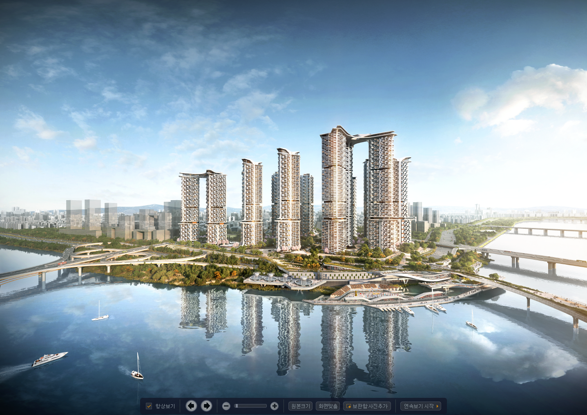
01 — Perspective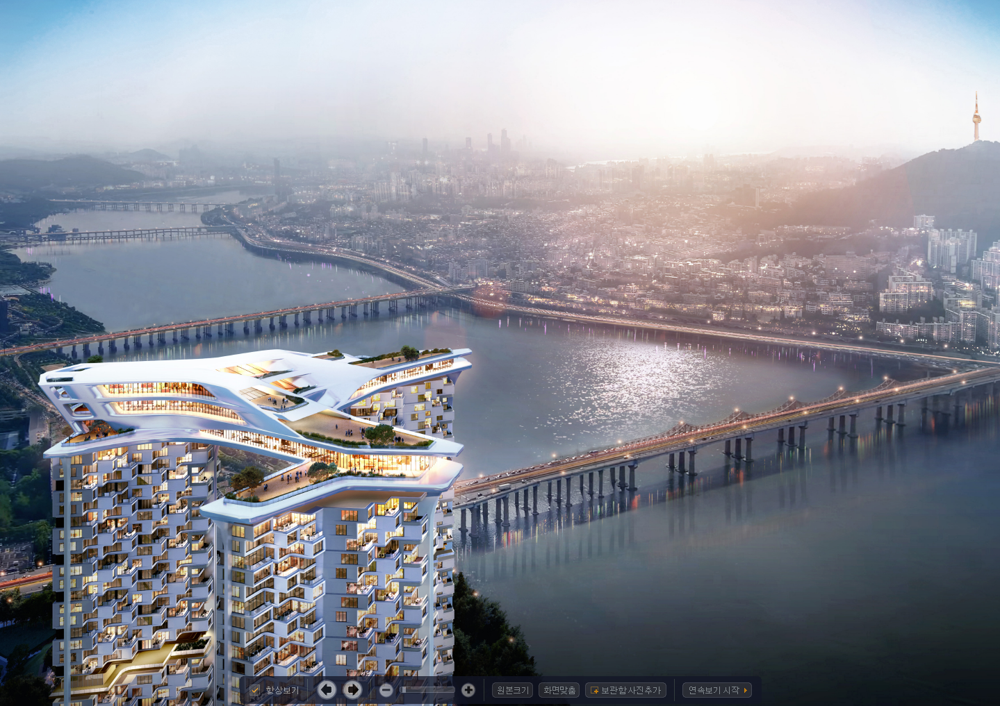
02 — Sky Community
영종 미단시티 내 2개 프로젝트, 5개 블럭을 연속 수행한 대규모 주거단지 개발입니다.
공동4·5+단독6블록(750세대)과 A1·A2블록(1,400세대)의 디자인을 총괄하며 배치 대안검토부터 외관 디자인까지 전 과정을 주도했습니다. 두 프로젝트 모두 당선 후 건축심의, 교통영향평가까지 인허가 전 과정에 참여했습니다.
A1·A2블록(1,400세대) 당선으로 시작해, 8개월 뒤 공동4·5+단독6블록(750세대)을 추가 수주하며 역할이 개별 블럭 설계에서 5개 블럭 동시 총괄로 확장되었습니다. 블럭별로 세대 규모와 향, 도로 접근성이 달라 각각 다른 배치 전략이 필요했고, 이를 하나의 통합 경관으로 정리한 것이 핵심 과제였습니다.
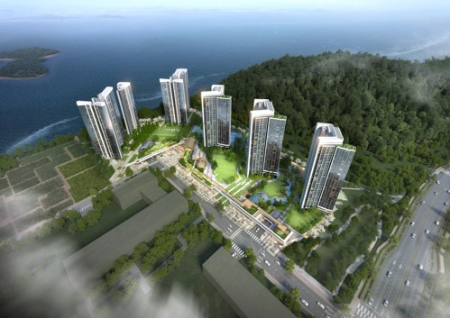
01 — Bird's Eye View
02 — Block A1·A2
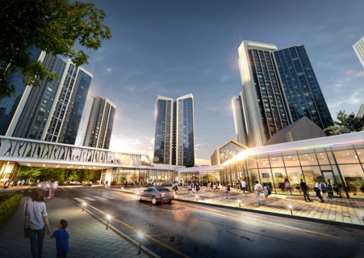
03 — Block 4·5·6
Project 07 / 10
반포 프리미엄 입지의 시공자 선정 대안입찰 프로젝트로, 삼성물산과 희림건축이 협업하여 당선했습니다.
희림이 전체 설계 방향과 디자인 가이드라인을 수립하고, Perkins Eastman이 이를 바탕으로 외관 디자인을 전개하는 구조로 협업했습니다. 삼성물산 VE팀과 공사비 절감 방안도 함께 도출했습니다.
희림건축·Perkins Eastman·삼성물산 VE팀의 3자간 협업 프로젝트입니다. 디자인 가이드라인을 선제적으로 수립하여 방향을 명확히 하고, 물량산출과 지하주차장 전층 도면을 직접 작성했습니다. VE팀과 협업하여 트랜스퍼 최소화 및 주차장 물량 절감으로 품질 저하 없는 원가 절감을 달성했습니다.
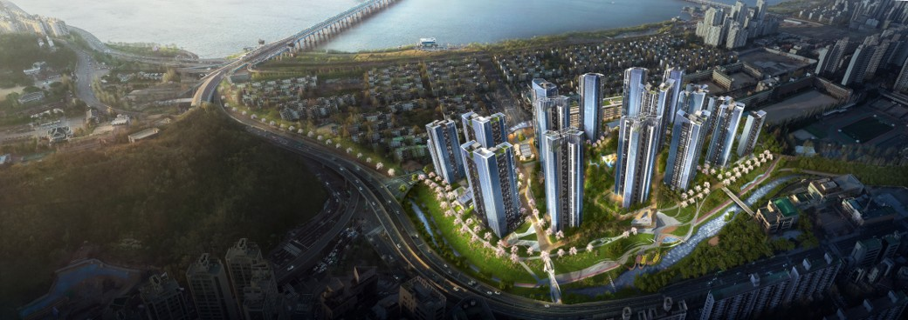
01 — Bird's Eye View 02 — Parking Plan
Project 08 / 10
02 — Parking Plan
Project 08 / 10
평택 브레인시티 161,146 m² 규모의 주거복합 프로젝트입니다.
현상설계 당선 후 실시설계팀으로 전환하여 1년 6개월간 인허가 전 과정을 직접 담당했습니다. 경관심의, 소방성능위주심의, 교통영향평가, 건축심의를 모두 직접 진행하며 설계-인허가 전 과정을 주도했습니다.
단순 설계안 작성을 넘어 설계의 실현 가능성을 검증한 프로젝트입니다. 현상설계 당선 후 실시설계팀으로 직접 전환하여 연속성을 확보하고, 경관·소방·교통·건축 4개 심의를 모두 직접 진행하며 관계기관과의 협의를 주도했습니다. 이를 통해 설계 의도를 심의 조건에 맞게 조율하면서도 훼손 없이 관철하는 실행력을 갖추게 되었습니다.
01 — Bird's Eye View
 02 — Site Plan
02 — Site Plan
 03 — Detail View
Project 09 / 10
03 — Detail View
Project 09 / 10
송도국제도시의 2,316,643 m² 규모 마스터플랜 프로젝트입니다. 2016년 도시개발 현상설계 당선부터 약 8년간 지속된 장기 프로젝트로, 9개 블럭의 배치 및 디자인을 총괄했습니다.
Norman Foster, Morphosis, GMP가 참여한 국제현상공모의 RFP 제작 및 관리를 담당하여 Morphosis를 최종 선정했습니다.
8년간 프로젝트는 크게 세 국면으로 진화했습니다. 초기(2016–2021)에는 도시개발 현상설계 당선 후 9개 블럭의 마스터플랜과 디자인 가이드라인을 수립했고, 중기(2022–2023)에는 세계적 건축사 3팀이 참여한 국제공모의 RFP를 직접 제작하여 공모를 총괄했습니다. 후기(2024)에는 Morphosis 선정 후 경관상세계획을 완성하고, M3·M4블럭은 GS건설 수의계약으로 마스터플랜 총괄에서 개별 블럭 실설계까지 역할을 확장했습니다.
 01 — Landmark Tower
01 — Landmark Tower
 02 — Block Design
02 — Block Design
 03 — Masterplan
Project 10 / 10
03 — Masterplan
Project 10 / 10
2016년 희림건축 입사 후 약 1년 뒤 참여한 첫 대형 재건축 프로젝트입니다.
강남 대치동 4,424세대 규모의 프리미엄 재건축 설계공모에서 지하주차장 배치와 부대시설 계획을 담당하고, 처음으로 홍보관에서 조합원들에게 직접 계획안을 설명했습니다. 이 프로젝트의 성공이 이후 약 10년간 36개 프로젝트, 6건의 주요 당선으로 이어지는 설계 경력의 출발점이 되었습니다.
4,424세대 규모의 지하주차장 배치는 단순한 주차 대수 확보가 아니라, 동선 효율·구조 모듈·환기 계획을 동시에 풀어야 하는 복합 퍼즐이었습니다. 이 과정에서 건축계획이 구조·설비와 어떻게 맞물리는지를 실전으로 체득했고, 홍보관에서 조합원 앞에 서며 설계안을 비전문가에게 설득하는 커뮤니케이션 역량도 함께 쌓았습니다.
01 — Bird's Eye View
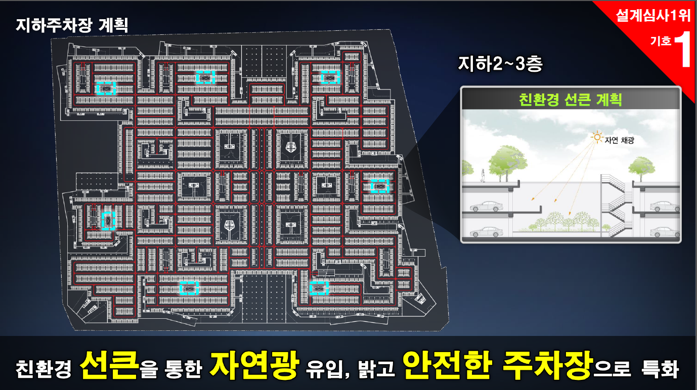
02 — Detail View